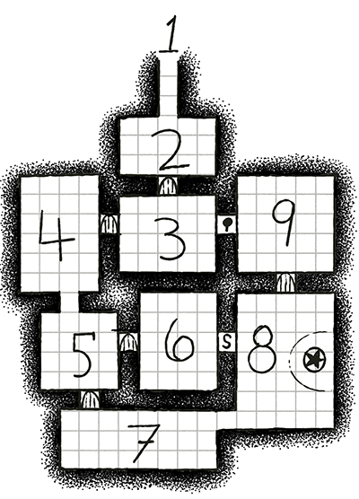

He hunts not only for hunger, but for pleasure. He takes joy in the pain and fear he inflicts on his quarry. He is not a creation of God, and not an animal of this world. -Pliny The Elder on the Manticore
This is an adventure for The Vanilla Game and other analog adventure games. It is meant for roughly 4 first level characters.
Deep in the dark mountain is a shrine to a saint whose name is long forgotten. This sinless saint died of an evil fever and their ashes were sealed in a silver flask. Opening the flask releases the saint’s sleeping spirit, who will grant its deliverer a single wish.
This is the lie travelers are told in the village at the foot of Fever Black Mountain. The truth is the villagers send strangers there to die. To keep an evil hunger satiated. The shrine in the mountain is really a prison for an evil Manticore that terrorized the land centuries ago. Ever since the Manticore was trapped here, the mountain and the air around it became unnaturally warm and the rock became black as if burned. People who travel through the mountain are known to catch fevers.
 The air is hot and humid. Anyone who spends an hour in the mountain develops a fever. After four hours the fever becomes deadly, and PCs must make Constitution saves or die every turn.
A heavy stone door lies broken on the ground if from of an arched stone frame. Hot air blows from the dark passage that leads south to the Hall of Footsteps (#2).
Foot shaped grooves are worn into the stone floor, as if people have walked in a circle here for centuries.
Roughly a hundred wooden bird feeders hang from hooks in the ceiling. A cloud of humming birds buzz around the ceiling, producing a disorienting roar and breeze. 2d6 Centipede Men are trying to catch and eat the quick birds, to no avail. An iron door to Room 9 is barred from the other side.
A large candelabrum made from human bones. Four fat unlit candles stand on four skulls, the now-dried wax has dripped down around the craniums, into the eye sockets. If a candle is lit the skull beneath will be able to speak. These magic candles work with any skull.
| 1d6 | Who speaks through this skull? |
|---|---|
| 1 | A priest from 200 years ago. Begs for beer, complains of headache. |
| 2 | An evil spirit. Instructs listeners to burn a cathedral, promises riches. It lies. |
| 3 | An ancient astrologer. If given the date and phase of the moon it can accurately predict weather for the next week. |
| 4 | A witch, mother of the black eyed children that roam the mountain. Destroy her naughty witch spawn who killed her and she’ll enchant a weapon to have 25% chance of poisoning on hits. |
| 5 | A bard from some other world. They only sing strange songs the PCs don’t recognize. I suggest playing Electricity by Captain Beefheart or Running Up That Hill by Kate Bush and taking a break from the game for the duration. |
| 6 | Iron Foot Felix. A legendary pirate who tells where his lost treasure is buried. Perhaps a hook for another adventure. |
Clothing and items are piled up in the center of the room. Four Crimson Monks are filling a wheel barrow with clothing. If they remain unaware of intruders they will take the full wheel barrow to the furnace in Room 7. The pile’s content is mostly ruined but searching reveals d6x10gp, a flask of oil, and a fine striped gentleman’s suit worth 20gp.
Five Black-Eyed Children feast on a corpse. Many gnawed bones are strewn about the room. Piles of straw and fabric make a filthy nest where an additional Black-Eyed Child sleeps. A door to room 8 is disguised to look with the stone wall.
Smoke from a burning iron stove darkens the air. A cauldron of boiling water and bones sits on top of the stove. A Crimson Monk tends to the cauldron, stirring and adding in blood from a bucket by his feet. If he doesn’t notice intruders, in 10 minutes he will take a pitcher of the soup to Room 8 and pour it in the mouth of the Manticore statue. If he fails to feed the statue in one hour it will shed its stone shell and befcome a real manticore.
A vicious looking Manticore statue in mid roar dominates the room. It’s stone mouth stained with blood. Thick chains twisted around the statue and connect to the wall. The statue is the petrified form of Mulsevnious, a very old and wicked Manticore of legend. It must be fed with a special potion the Crimson Cult is tasked with creating or it will shed it’s stone shell and become a real Manticore. The chains will only hold him for one turn. If he tries to flee the shrine, the hummingbirds will distract him for 1d6 turns.
Two Crimson Monks study star charts. A large shelf hold books and book fragments in esoteric languages. Searching the room yields a healing potion, 2 scrolls containing random spells, 2d6 white robes, not yet stained with blood, and a golden spider idol worth 200 gp. An iron door with a bar across it leads to Room 2.
A large book on a desk details the history of the Crimson Cult: - 300 years ago magician summoned Mulsevnious here and was eaten. - The Manticore laired in the mountain for 100 years. It was a era of terror as people around the mountain went missing, communities dwindled, many dissappeared. - 200 years ago, three foreign wizards came and bound Mulsevnious in stone. But the spell can only be maintained by regular sacrifice. A potion made of blood and bone. - The magicians and their acolytes began kidnapping travelers to sacrifice to the Manticore, and over the years evolved into the Crimson Cult. The villagers a vaguely aware and tell travelers of the treasure in the mountain shrine. Better strangers be sacrificed than locals. - 5 years ago the cult tamed the Black-Eyed Children, cursed offspring of a mountain witch, and began using them hunt travelers.
HD 1, AC 2
Long centipede bodies with many legs, with a human face and a pair of humanoid arms. Can move silently and climb walls. They dwell in the crevices of mountains.
HD 1
They look like human children with completely black eyes and doubled rows of shark-like teeth. According to folktale they are the hatched from eggs witches lay after eating human children.
HD 2, AC 1, Spells Known: Cause Light Wounds
Cultists who maintain the petrification spell that keeps the Manticore trapped in stone. They wear robes stained red with blood and carry short swords and throwing knives. Their wills have been twisted by the mountain’s fever and they are single-mindedly devoted to their task.
HD 5, AC 3, Spells Known: Leap, Enervate, Protection From Missiles
An ancient and cruel being summoned here from parts unknown. It’s body resembles a great cat but with a long neck. On the end of its neck is face like an old mad with a too wide mouth full of sharp teeth. The end of its tale is covered in quills that it can sling like darts. Mulsevnious enjoys causing fear and pain. He prefers to attack from the shadows than to engage in head to head combat. He is quick, stealthy and devious. He can regain one flesh point per hour and can only die if his body is burned.